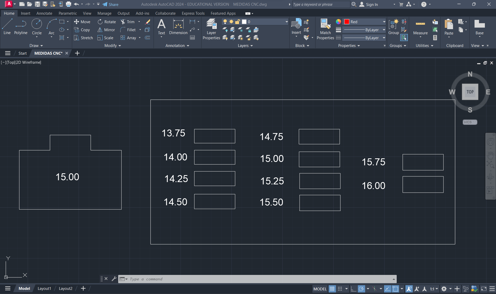
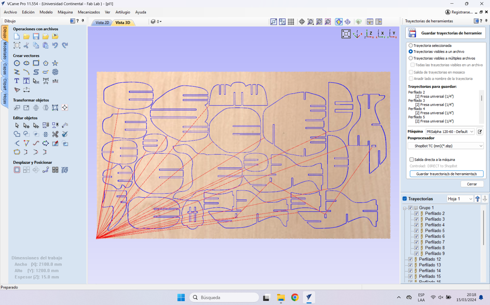

Welcome to Week 7
Computer Controlled Machining
Hey! now we will learn about Computer controlled machining.
The machine we have at Continental University is the SHOPBOT PR ALPHA MODEL 120 – 60 that we will use for this week's work. Below are some specifications of the machine:
| CUT / MOVEMENT AREA: | 129” x 61” x 8”s |
|---|---|
| XY POSITIONING SPEED: | Variable, max. 1800”/min. |
| Z POSITIONING SPEED: | Variable, max. 900”/min. |
| LINEAR CUTTING FORCE: | Approximately 150 lbs. |
| INPUT VOLTAGE: | 220v single-phase, 230v 3-phase and 380/460V 3-phase power options are available |
We prepare our security team to be able to comply with security aspects and be able to start working.
The implements we have for the CNC machine are 1/4", 1/8" and 5/8" cutters along with their ER25 collets and a cutter that comes with the SHOPBOT. For our group and individual work we will use the 1/4".
Well now let's open the Vcarve pro program and make some initial configurations such as the calibration in x, y as well as the calibration in z.
When you open the program, 2 windows will appear. The POSITION is where we perform the calibration, movement and start or stop control of the machine. The second window is COMMAND CONSOLE where we can open the trajectories, warm up the machine and, if it is the first time we use it, its configuration.
To calibrate the Z axis, we have to click on the Z button in the Position window. Before calibrating, we have to place the hook on the SPLINDER and the metal plate on the material, so that the machine can be calibrated.
From this point onward, the machine will exclusively focus on calibrating its Z-axis before initiating its operations. Below is a video demonstrating the calibration process in action.
Now yes! let's do some tests to find the tolerances just like we did with the laser cutting.
The initial test we conduct is the HEX COMB, aimed at identifying the optimal fit. Throughout all our tests, we'll utilize 15mm PLYWOOD, consistent with the material we'll employ in our individual project.
First, what we did was make the drawing in AUTOCAD taking into account the thickness of the material, which is 15 mm, and we gave each section a value of +0.25 mm to see which measurement was appropriate for a correct fit.

Now with the design we proceed to transfer it to the Vcarve Pro and cut it.

We open the shopbot program and proceed to upload the file to spawn

Push open and start, let's see the process :
After cutting both hex comb, we can analyze and verify that the best joint for joints that are like this is for the cuts to have +0.75mm of the thickness of the material. In this case, for the 15 mm material the ideal cut would be 15.75 mm for a better fit of the pieces

It looked great, let's move on to the next test…
The subsequent test involves the evaluation of the dog bone and hole configurations. The objective of this test is to determine the optimal sizes required for the pieces to fit precisely within the holes. The dog bone test facilitates easy insertion of the pieces while ensuring that corners pose no issues, particularly with the female pieces. Conversely, the hole test helps determine the appropriate size for the female piece to accommodate the male piece smoothly without causing damage to the material.
To shape the dog bone, we can utilize VCarve Pro after designing the pieces. Upon importing the design, we navigate to the "Create Chanfle" button to implement the necessary shaping.
Now we give you the cutting path to start with the crop.
Let's see the process
We can see that the MALE piece easily fits into the +0.40mm hole, that is, if the piece has a thickness of 15 mm, we need the female piece to have a hole of +0.75mm, in this case 15.75mm.
Ready now let's put together something big and cool
I decided to make a piece of furniture where they can sit but that also has additional functionality to hold some things like tools or books at the bottom. An animal came to mind which is quite robust, a rhinoceros.
Let's start the design in AutoCad.
I've chosen to create a small-scale model of my selected proposal using 3mm MDF. This material was selected based on our previous work in the 3rd week to analyze potential stability issues and assess whether any design improvements are necessary.
After analyzing and correcting the errors obtained in the model, I decided to start machining the parts, also importing into VCARVE PRO, I started selecting the female holes of the parts, by the way I changed the size of the holes with the appropriate measurements mentioned in the tests.

Let's see the process…
After cutting all the pieces, I began to assemble them and at first it was difficult because of the joints, because there was slight movement when pushing the piece into the socket. All the pieces went in without complications.
The final result turned out very well. The truth is that I really like the shape, I was amazed at how wonderful it is to go from a small scale to a large one.
Now let's test its resistance….

That was all, I leave the files of this adventure here and see you next week….